2026
Janvier
-
08 —
Découvertes de séries et retour dans le Monde à l’envers


 Superman & Lois, Shrinking, ♡ Stranger Things, ♡ Les Moomins
Superman & Lois, Shrinking, ♡ Stranger Things, ♡ Les Moomins -
08 —
Nouveaux Poneys de Noël


 La chance passe toujours à Noël, ♡ Papa par intérim à Noël, ♡ La recette d’un Noël parfait, La ballerine de Noël, La danseuse étoile de Noël, ♡ Les couleurs de Noël, Mission Joyeux Noël, Tinsel Town, Merv, ♡ Passion Noël
La chance passe toujours à Noël, ♡ Papa par intérim à Noël, ♡ La recette d’un Noël parfait, La ballerine de Noël, La danseuse étoile de Noël, ♡ Les couleurs de Noël, Mission Joyeux Noël, Tinsel Town, Merv, ♡ Passion Noël -
08 —
Autres films : SF, comédie et action


 Ick, The Astronaut, Y a pas de réseau, The Family Plan 2, Bugonia, Good Fortune, Carry-On
Ick, The Astronaut, Y a pas de réseau, The Family Plan 2, Bugonia, Good Fortune, Carry-On
2025
Novembre


Octobre


Septembre
 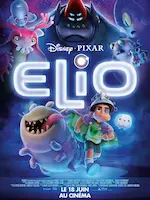
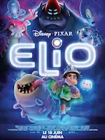


Août

 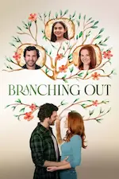
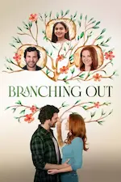

 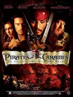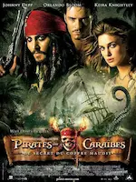
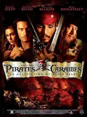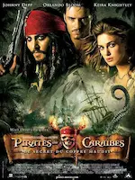
Juin
-
09 —
Séries sur des Cold case, des urgences, une dystopie et de la comédie en animation
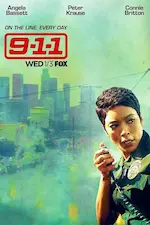

 Black Snow, 9 ⸱ 1 ⸱ 1, Severance, Astérix et Obélix – Le combat des chefs
Black Snow, 9 ⸱ 1 ⸱ 1, Severance, Astérix et Obélix – Le combat des chefs -
06 —
Magie, tranche de vie et aventures
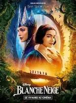
 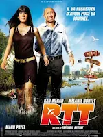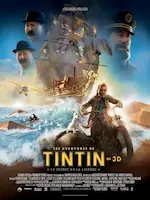Blanche Neige, Minecraft – Le film, Jane Austen a gâché ma vie, RTT, Les aventures de Tintin – Le secret de la Licorne
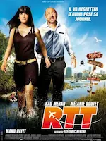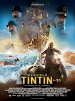Blanche Neige, Minecraft – Le film, Jane Austen a gâché ma vie, RTT, Les aventures de Tintin – Le secret de la Licorne
Avril
 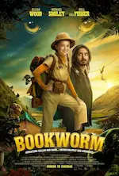
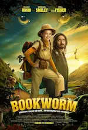


 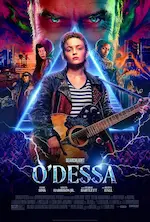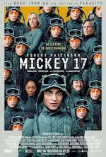
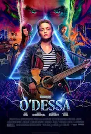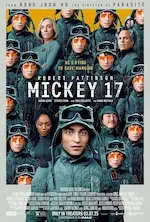Mars
-
13 —
Amour, famille et fantômes


 L’Amour ouf, ♡ Melle Bottine, Ghosts (UK)
L’Amour ouf, ♡ Melle Bottine, Ghosts (UK) -
01 —
Grimm, CB Strike, Panda


 ♡ Grimm (intégrale), CB Strike (saison 6), Panda (saison 2)
♡ Grimm (intégrale), CB Strike (saison 6), Panda (saison 2)
Février

 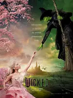
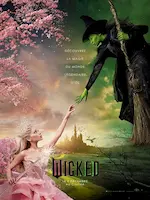
 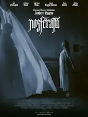
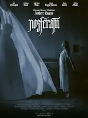
2024
Décembre


Novembre
-
30 —
Comédies romantiques, magie et autres films


 This time next year, Le bal masqué de Noël, Le nombre magique de Noël, The Merry Gentlemen, The portable door, Ellian et le sortilège, Sharper, Veuillez nous excuser pour la gêne occasionnée
This time next year, Le bal masqué de Noël, Le nombre magique de Noël, The Merry Gentlemen, The portable door, Ellian et le sortilège, Sharper, Veuillez nous excuser pour la gêne occasionnée -
10 —
Séries et animés

 ♡ From, Resident alien, Attack on Titan, ♡ Yuru Camp
♡ From, Resident alien, Attack on Titan, ♡ Yuru Camp -
10 —
Comédies


 Loups-garous, Le médium, Paris à tout prix, ♡ Pourquoi tu souris ?, Wolfs
Loups-garous, Le médium, Paris à tout prix, ♡ Pourquoi tu souris ?, Wolfs -
09 —
Poneys de Noël, romance fantastique et vengeance


 Falling inn love, Lettres magiques au Père Noël, Un ami pour Noël, ♡ Stardust - Le mystère de l'Étoile, Le Comte de Monte Cristo, Speak no Evil, Maurice le chat fabuleux, Joker folie à deux
Falling inn love, Lettres magiques au Père Noël, Un ami pour Noël, ♡ Stardust - Le mystère de l'Étoile, Le Comte de Monte Cristo, Speak no Evil, Maurice le chat fabuleux, Joker folie à deux